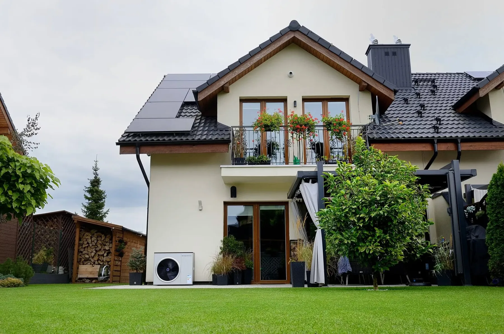
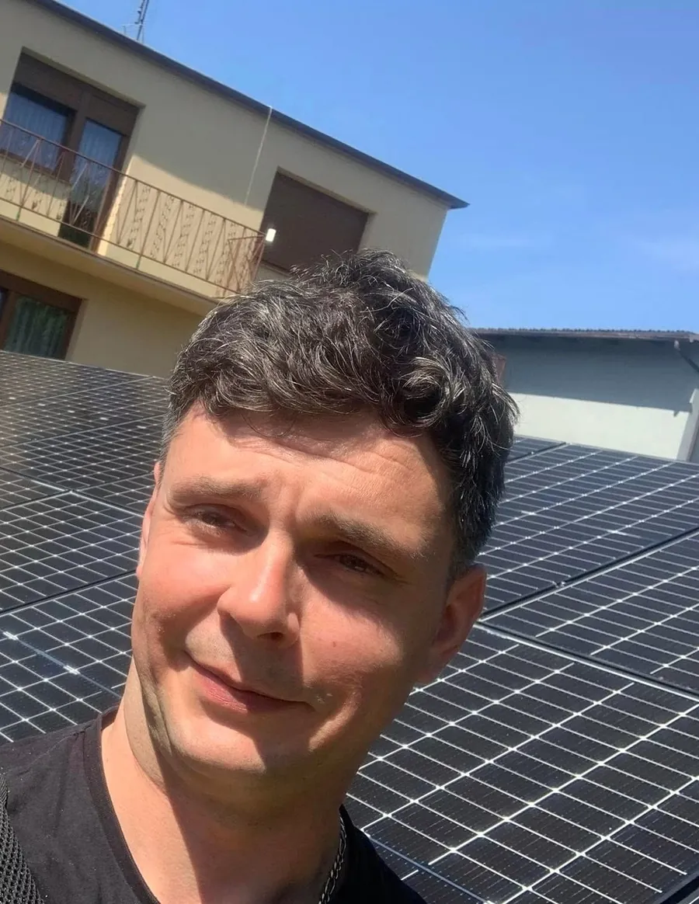
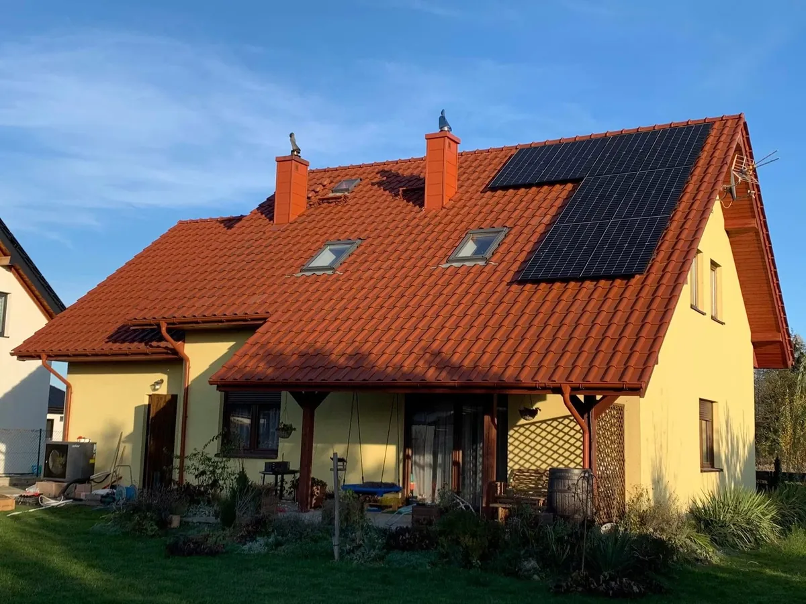
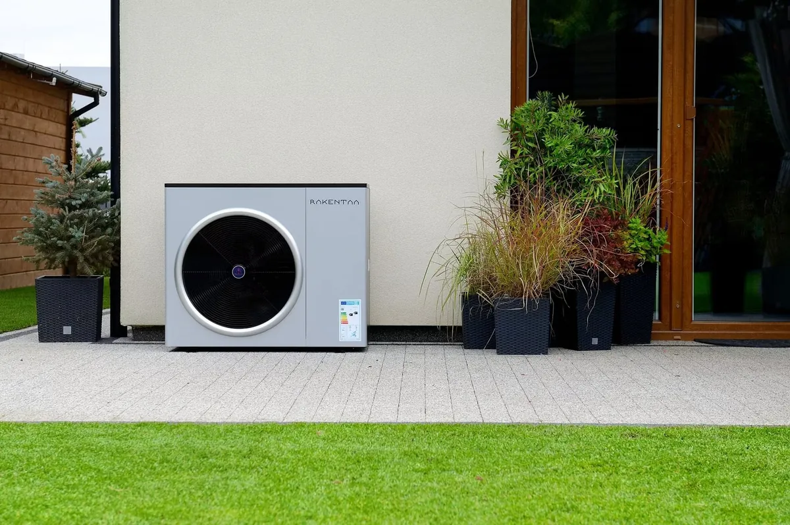
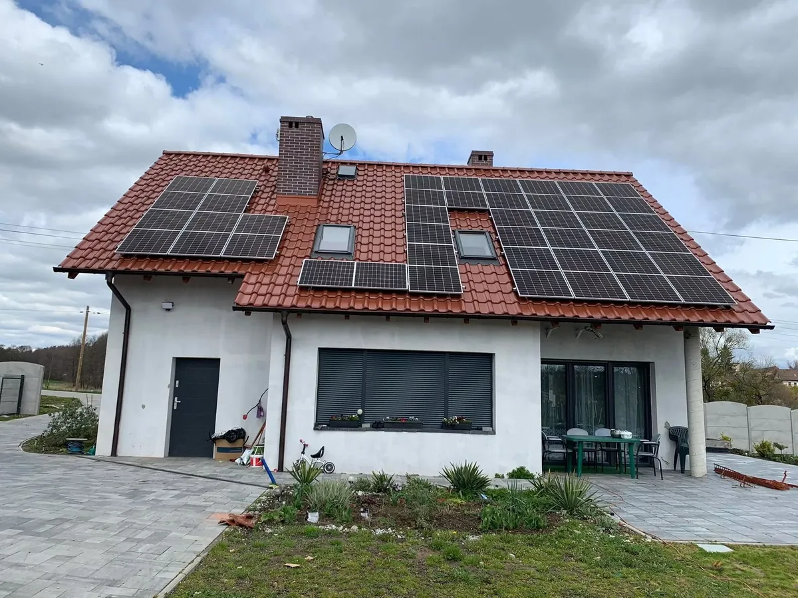
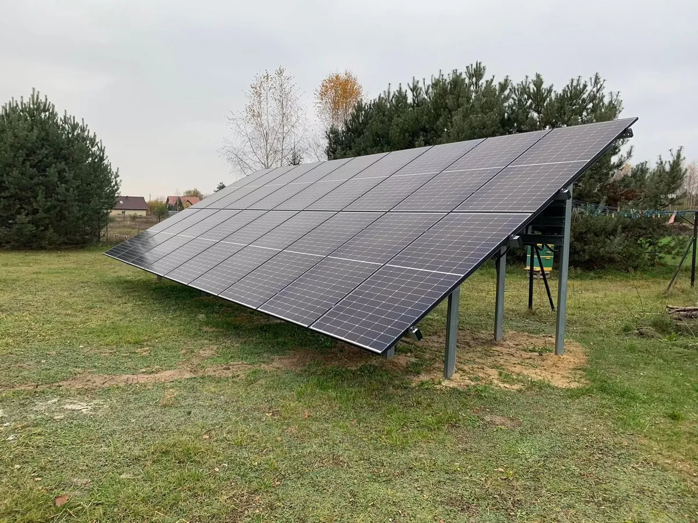
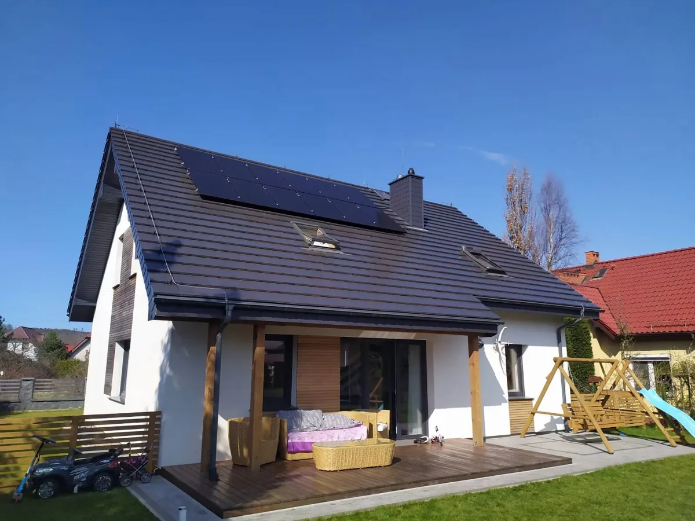
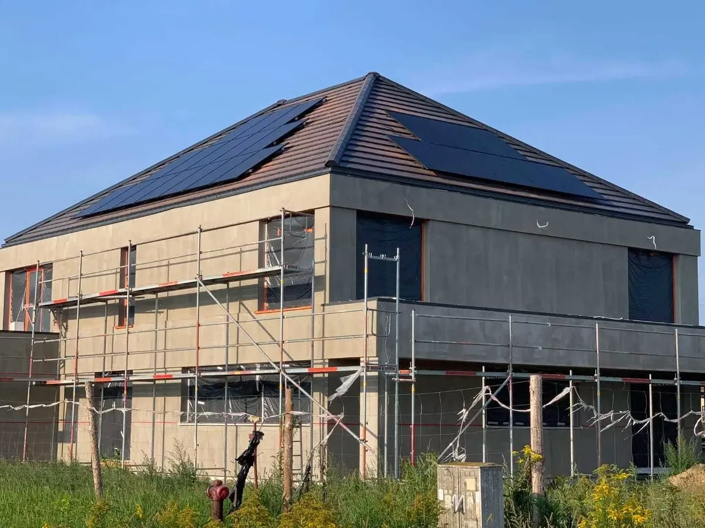
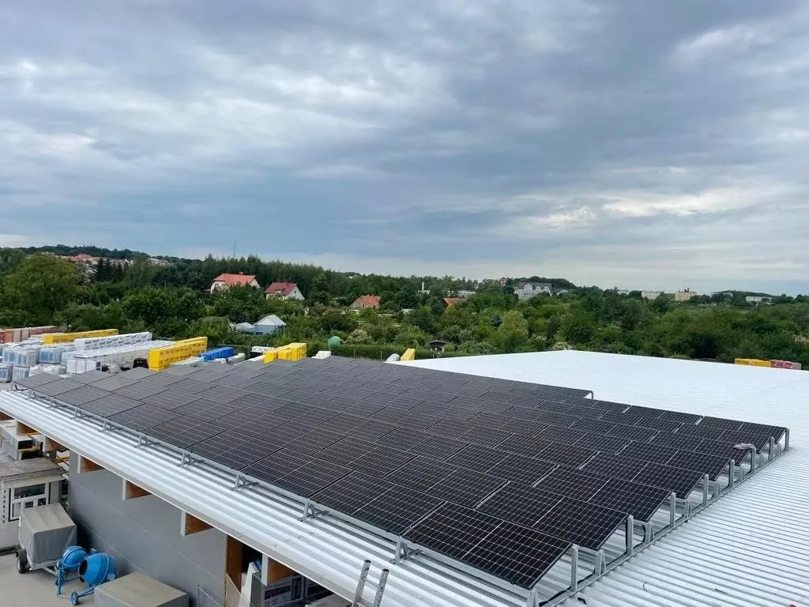

Czyste Powietrze
Dla właścicieli domów, którzy wymieniają stary kocioł i ocieplają budynek. Wysokość wsparcia zależy od dochodu, a pompa ciepła musi pochodzić z listy zielonych urządzeń i materiałów (ZUM).
Doradca OZE · Długołęka, Trzebnica, Oleśnica i okolice Wrocławia
Sprawdzam, z którego programu możesz skorzystać, dobieram urządzenia pod jego wymagania i przygotowuję wniosek. Przy montażu pilnuję, żeby wszystko poszło zgodnie z projektem.

5,0 · 12 opinii w Google
O mnie
Nazywam się Rafał Szostak. Od dziesięciu lat projektuję i sprzedaję instalacje fotowoltaiczne, a dziś także pompy ciepła i magazyny energii dla domów spod Wrocławia, Trzebnicy i Oleśnicy. Na co dzień pracuję z Domaszczyna w gminie Długołęka.
Każdą rozmowę zaczynam od rachunków i planu domu. Zanim zaproponuję konkretne urządzenie, sprawdzam, na jaką dotację możesz liczyć i jakie warunki stawia program. Wycena od razu pokazuje dofinansowanie, zamiast obiecywać je na wyrost.
Na jednej, stumetrowej ulicy założyliśmy osiem instalacji. Sąsiedzi przekonywali się do nich jeden od drugiego.
Dotacje
Każdy nabór ma własne progi dochodowe, listę dopuszczonych urządzeń i kolejność kroków. Źle dobrany program potrafi odebrać dofinansowanie już po montażu, dlatego od niego zaczynam.
Dla właścicieli domów, którzy wymieniają stary kocioł i ocieplają budynek. Wysokość wsparcia zależy od dochodu, a pompa ciepła musi pochodzić z listy zielonych urządzeń i materiałów (ZUM).
Mój Prąd i kolejne nabory NFOŚiGW dopłacają do paneli oraz domowych magazynów prądu i ciepła. W net-billingu najwięcej zyskuje dom, który zużywa prąd na miejscu, dlatego bateria coraz częściej trafia do projektu od początku.
Wydatki na pompę ciepła, panele czy ocieplenie odliczysz od dochodu w zeznaniu PIT. Podpowiem, które faktury zachować i jak ulga łączy się z dotacją.
Gdy dotacja nie pokrywa całości, pomagam sfinansować resztę. [BRAK: z jakimi bankami lub programami ratalnymi współpracujesz]
125 tys. zł
dofinansowania na pompę ciepła, fotowoltaikę oraz ocieplenie ścian i poddasza w ponad stuletnim domu. Z opinii Adriana J. w Google
Kwoty i terminy naborów zmieniają się nawet kilka razy w roku. Aktualne warunki sprawdzam przy każdej wycenie.
Dobór sprzętu
Moc dobieram do rocznego zużycia, kierunku i kąta dachu. Gdy część połaci zasłania komin albo drzewo, proponuję mikroinwertery, przy których każdy panel pracuje niezależnie.
Zaczynam od zapotrzebowania domu na ciepło. Inna pompa sprawdzi się przy ogrzewaniu podłogowym, a inna przy starszych grzejnikach, które potrzebują cieplejszej wody.
Prąd z dachu jest najwięcej wart, gdy zużywasz go sam. Magazyn przesuwa południowe nadwyżki na wieczór, kiedy w domu ruszają pralka, kuchenka i pompa ciepła.
W starszym domu ocieplenie ścian i poddasza obniża zapotrzebowanie na ciepło, a wtedy wystarcza mniejsza i tańsza pompa. Dlatego liczę oba tematy razem.
W moich realizacjach pracują między innymi panele Jolywood i mikroinwertery Hoymiles. Montuję też stacje ładowania samochodów elektrycznych. [BRAK: pozostałe marki paneli, falowników i pomp ciepła]
Jak pracuję
Siadamy nad rachunkami za prąd i ogrzewanie. Oglądam dach, kotłownię i instalację grzewczą.
Dobieram program i urządzenia. W wycenie widzisz kwotę dotacji i koszt, który zostaje po twojej stronie.
Przygotowuję dokumenty do naboru, a przy montażu pilnuję zgodności z projektem. [BRAK: kto montuje]
Zgłaszamy instalację do operatora sieci i rozliczamy dofinansowanie. Z pytaniami możesz dzwonić także później.
Realizacje


Powiat wrocławski
9,24 kWp
22 panele Jolywood 420 W w pełnej czerni i mikroinwertery Hoymiles, z podglądem pracy każdego panelu przez Wi-Fi.



Januszkowice
12,60 kWp
[BRAK: zdjęcie, sprzęt i krótki opis]


Opinie
Fotowoltaika działa już drugi rok, nie wyłącza się, produkuje o 30% więcej niż było obiecane, a odkąd Pan Rafał zmienił nam rozliczenie na 80:20 płacimy 0 zł miesięcznie i rocznie. Dziękujemy :)
Pan Rafał zrobił nam dotacje 125 tys zł. Dom ponad 100 letni, założył nam: pompę ciepła, fotowoltaikę, ociepli dom styropianem, poddasze wełną. Wszystko działa Wspaniale już drugi rok a dom wygląda jak nowy. Dziękujemy i polecamy !!!
Bardzo fajne podejście - konkretnie, zrozumiale i bez naciagania. Pan Rafał wszystko spokojnie nam wyjaśnił jak działa fotowoltaika, jakie są realne korzyści i jak wygląda cały proces od A do Z. Dzięki temu poczułem, że naprawdę wiem, na co się decyduję.
Pan Rafał był odpowiedzialny za zrealizowanie projektu paneli fotowoltaicznych na moim domu. Dobrze doradził, fachowo zajął się dokumentacją oraz nadzorował montaż. Ze swojej strony bardzo polecam i zachęcam do kontaktu.
Pytania
Dotacja na pompę ciepła zależy od programu i dochodu w twoim gospodarstwie domowym. W Czystym Powietrzu liczy się też, czy wymieniasz stary kocioł i jak ocieplony jest dom. Na pierwszym spotkaniu sprawdzę, na który poziom dofinansowania się kwalifikujesz.
Wniosek o dofinansowanie przygotowuję ja, razem z załącznikami, a ty go tylko podpisujesz. Pilnuję też terminów i dokumentów potrzebnych do rozliczenia po montażu.
Fotowoltaika w net-billingu opłaca się najbardziej wtedy, gdy większość prądu zużywasz na miejscu. Dlatego liczę moc pod twoje zużycie i sprawdzam, czy magazyn energii albo pompa ciepła podniosą tę część.
Pompa ciepła z fotowoltaiką to dobre połączenie, bo panele pokrywają część prądu na ogrzewanie i ciepłą wodę. Zimą słońca jest mniej, więc bilans liczę dla całego roku, a nie dla lipca.
Instalację od innej firmy też przejrzę. Sprawdzę, dlaczego falownik się wyłącza albo produkuje mniej, niż obiecano, i doradzę, co da się poprawić. [BRAK: czy robisz serwis i rozbudowę cudzych instalacji]
[BRAK: typowy czas od podpisania umowy do montażu i czas samego montażu]
Kontakt
Przyjadę, obejrzę dom i policzę instalację razem z dotacją.
796 212 796Dojeżdżam do klientów w okolicach